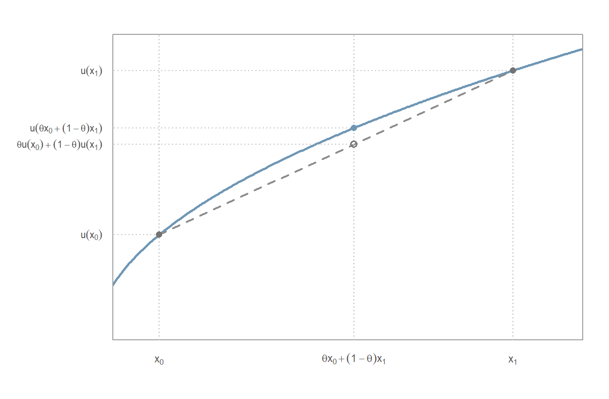
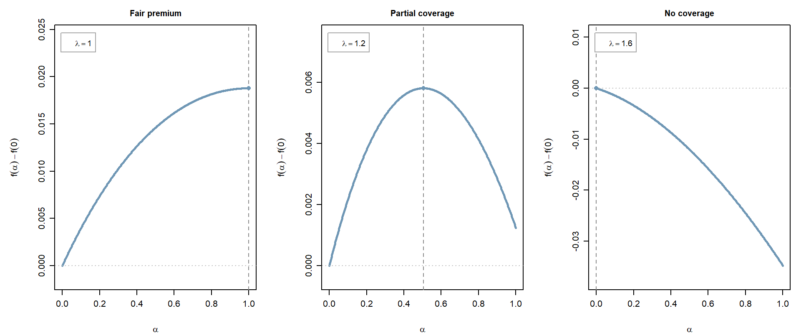
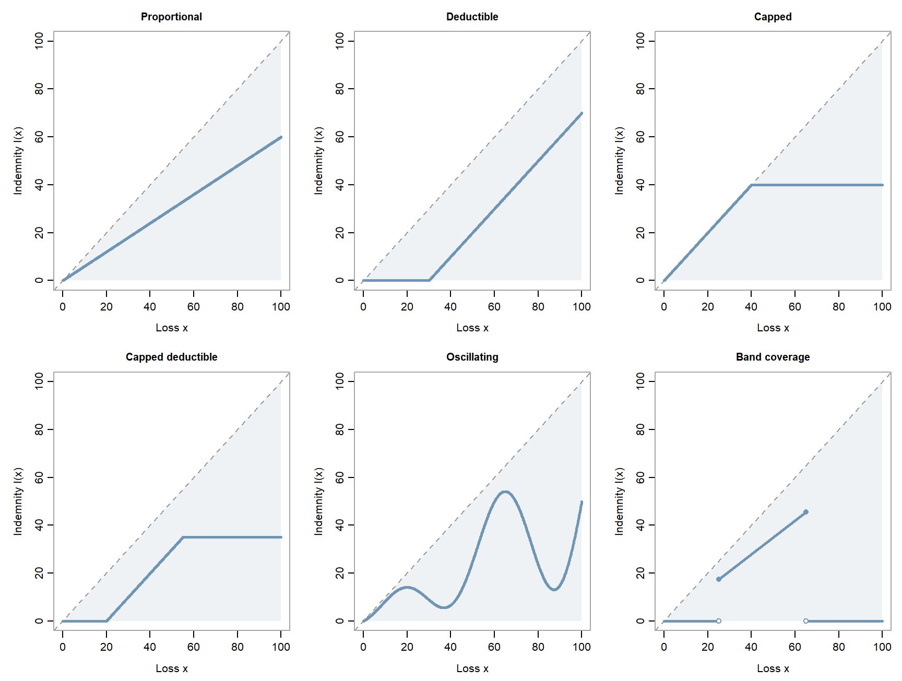

Microeconomics of insurance
Chapter 2
Decision theory
Before studying the demand for insurance, we need a language for comparing risky situations. We shall use the expected-utility framework of von Neumann and Morgenstern, whose book Theory of Games and Economic Behavior (1944) introduced the framework, with an axiomatic derivation of numerical utility added in the second edition (1947). The point is not that individuals literally write down a utility function before making a decision. Rather, the model gives a coherent mathematical representation of preferences under risk and a convenient language in which to study risk aversion, a central concept to be defined below.
Preferences over risky wealth
Fix a probability space \((\Omega,\mathcal F,\mathbb P)\). Let \(\mathcal I\subseteq\mathbb R\) be an interval, typically \(\mathbb R\), \(\mathbb R_+=[0,\infty)\) or \(\mathbb R_+^*=(0,\infty)\).
We assume that an agent’s preferences over random wealth levels taking values in \(\mathcal I\) admit an expected-utility representation, i.e., there exists a function \(u:\mathcal I\to\mathbb R\) such that
\[ X \precsim_u Y \quad\Longleftrightarrow\quad \mathbb E[u(X)]\leq \mathbb E[u(Y)]. \]
The notation \(X\precsim_u Y\) means that the agent weakly prefers \(Y\) to \(X\): they either strictly prefer \(Y\) or are indifferent between the two. More precisely,
\[ \begin{aligned} X\prec_u Y &\quad\Longleftrightarrow\quad \mathbb E[u(X)]<\mathbb E[u(Y)] &&\text{(strict preference)},\\ X\sim_u Y &\quad\Longleftrightarrow\quad \mathbb E[u(X)]=\mathbb E[u(Y)] &&\text{(indifference)}. \end{aligned} \]
The word weakly includes equality.
NoteUtility is not unique
If \(\alpha>0\) and \(\beta\in\mathbb R\), then \(u\) and \(\widetilde u=\alpha u+\beta\) represent exactly the same preferences. Any economically meaningful quantity derived from utility should therefore be invariant under increasing affine transformations. The affine restriction matters: an arbitrary increasing transformation need not preserve expected-utility comparisons.
ImportantStanding assumptions
The following conventions apply throughout the chapter unless stated otherwise.
Utility functions. Every utility function, including comparison utilities denoted by \(v\), is continuous on its domain and twice continuously differentiable on the interior of its domain, with
\[ u'(x)>0, \qquad u''(x)\leq 0. \]
Derivatives are evaluated on the interior of the domain. We state explicitly when the stronger condition \(u''<0\) is required.
Integrability. We restrict attention to random variables for which all the expectations under consideration are well defined and finite. The precise integrability conditions depend jointly on the random variable and on the utility function.
Monotonicity. Increasing and decreasing mean strictly monotone. We use non-decreasing and non-increasing when equality is allowed.
The condition \(u'>0\) implies that more wealth is preferred to less. The condition \(u''\leq0\) says that the marginal utility of wealth is non-increasing: an additional euro matters no more (and typically less) at a higher wealth level. If \(u''(x)=0\) for all \(x\), then \(u\) is affine and increasing (we often normalise it to \(u(x)=x\)), and the agent is said to be risk-neutral.
The geometric meaning of concavity is useful to keep in mind. For \(x_0,x_1\in\mathcal I\) and \(\theta\in[0,1]\),
\[ u\bigl(\theta x_0+(1-\theta)x_1\bigr) \geq \theta u(x_0)+(1-\theta)u(x_1). \]
The graph of a concave utility function therefore lies above every chord joining two points of the graph.
Concavity has an immediate interpretation under uncertainty.
Theorem 1 (Jensen’s inequality) Let \(u\) be concave and let \(X\) be an integrable random variable such that \(u(X)\) is integrable. Then
\[ \mathbb E[u(X)] \leq u\bigl(\mathbb E[X]\bigr). \]
If \(u\) is strictly concave and \(X\) is non-degenerate, meaning that \(X\) is not almost surely constant, the inequality is strict.
Under our concavity assumption, Jensen’s inequality always gives
\[ X\precsim_u\mathbb E[X]. \]
The agent weakly prefers a sure wealth level to any risky wealth with the same mean. When \(u\) is strictly concave, the above preference becomes strict for every non-degenerate risk. The latter property is called risk aversion and we say that the agent is risk-averse. Here we use risk-averse for this strict preference.
A simple classroom example illustrates risk aversion. Compare a sure €1 with a fair coin toss paying €0 or €2. At such small stakes, one may feel almost indifferent. Compare next a sure €10,000 with a fair gamble paying €0 or €20,000: the sure amount may now be much more attractive. Finally, consider a sure €250,000 versus a fair gamble paying €0 or €1,000,000. Choosing the sure amount, which most people in the classroom do, means accepting only half the expected payoff to avoid the uncertainty. These examples illustrate possible preferences, rather than a universal pattern; all amounts should be understood against the same background wealth.
The last example raises a more informative question: what sure amount would make the individual indifferent to the gamble? Most people cannot specify their utility function, but they can often give an intuitive answer to such a choice, or say whether a proposed entry price makes a game worth playing. This motivates certainty equivalents and, for purchases of risky payoffs, indifference prices.
Certainty equivalents
The previous example suggests a natural way of attaching a monetary value to a risky prospect.
Definition 1 (Certainty equivalent) Let \(X\) take values in \(\mathcal I\) and assume that \(u(X)\) is integrable. The certainty equivalent of \(X\) for utility \(u\) is the unique sure wealth level \(\operatorname{ce}_u(X)\in\mathcal I\) satisfying
\[ u\bigl(\operatorname{ce}_u(X)\bigr) = \mathbb E[u(X)]. \]
Equivalently,
\[ \operatorname{ce}_u(X) = u^{-1}\!\left(\mathbb E[u(X)]\right). \]
The definition makes sense: continuity and monotonicity of \(u\) imply that \(u(\mathcal I)\) is an interval. The finite mean \(\mathbb E[u(X)]\) belongs to this interval as well: if a finite endpoint is excluded, then \(u(X)\) lies strictly on one side of it almost surely, and so does its mean. Thus \(u^{-1}(\mathbb E[u(X)])\) exists and is unique.
In French, the same object is the équivalent certain, often denoted \(ec_u(X)\).
The certainty equivalent is a monetary valuation of final wealth: it is the sure wealth level that makes the agent indifferent to the risky wealth \(X\).
NoteCertainty equivalents and indifference prices
When the random variable represents an incremental payoff rather than final wealth, it is often more natural to speak of an indifference price.
Suppose an agent has initial wealth \(w\) and considers buying a risky payoff \(Y\) for a price \(p\). The buyer’s indifference price \(p_u(w,Y)\) is defined, when it exists, by
\[ \mathbb E\!\left[u\bigl(w+Y-p_u(w,Y)\bigr)\right] = u(w). \]
At a price \(p\), the agent compares \(\mathbb E[u(w+Y-p)]\) with \(u(w)\). Since utility is increasing, raising the price makes the purchase less attractive. If \(p_u(w,Y)\) solves the equation above, then the agent prefers buying at a lower admissible price, is indifferent at \(p_u(w,Y)\), and prefers not buying at a higher admissible price. Thus \(p_u(w,Y)\) is the maximum acceptable price.
In general, \(p_u(w,Y)\) depends on initial wealth \(w\): it values the payoff \(Y\) in the context of the individual’s existing resources. By contrast, \(\operatorname{ce}_u(Y)\) treats \(Y\) itself as final wealth. Under CARA utility on \(\mathbb R\) (see below), translation invariance gives
\[ \operatorname{ce}_u(w+Y-p)=w-p+\operatorname{ce}_u(Y), \]
so the indifference condition reduces to
\[ p_u(w,Y)=\operatorname{ce}_u(Y). \]
Proposition 1 (Certainty equivalent and the mean) Whenever the quantities are well defined,
\[ \operatorname{ce}_u(X) \leq \mathbb E[X]. \]
If \(u\) is strictly concave and \(X\) is non-degenerate, the inequality is strict.
Proof. By Jensen’s inequality,
\[ \mathbb E[u(X)] \leq u(\mathbb E[X]). \]
By definition,
\[ \mathbb E[u(X)] = u\bigl(\operatorname{ce}_u(X)\bigr). \]
Since \(u\) is increasing,
\[ \operatorname{ce}_u(X) \leq \mathbb E[X]. \]
Strict concavity and non-degeneracy give the strict version through the strict form of Jensen’s inequality.
The difference
\[ \Pi_u(X) := \mathbb E[X]-\operatorname{ce}_u(X) \geq0 \]
is called the risk premium. It is the discount, relative to the expected value, associated with bearing the risk.
NoteThe St Petersburg paradox
The St Petersburg paradox illustrates why expected monetary value alone need not determine choices under risk. Nicolas Bernoulli posed the problem in his correspondence in 1713. The game roughly proceeds as follows: toss a fair coin; if it lands heads, the game ends and you receive €2. Otherwise, toss again: a head on the second toss pays €4. If the first two tosses are tails, continue, with €8 paid for a first head on the third toss, and so on. Each tail doubles the amount at stake, and the game ends at the first head.
Let \(N\) be the number of tosses until the first head and let \(Z_n=2^n\) be the payoff if the game ends on toss \(n\). A first head on toss \(n\) requires \(n-1\) tails followed by one head, so \(\mathbb P(N=n)=2^{-n}\). The game ends almost surely, but its payoff \(Z_N=2^N\) has infinite expectation (this example deliberately departs from our finite-expectation convention):
\[ \mathbb E[Z_N] =\sum_{n=1}^{\infty}Z_n\mathbb P(N=n) =\sum_{n=1}^{\infty}2^n2^{-n} =\sum_{n=1}^{\infty}1=+\infty. \]
Every possible value of the stopping time contributes the same positive amount to the expectation. Yet the fact that the expected payoff is infinite does not make an arbitrarily large entry fee attractive.
Daniel Bernoulli’s celebrated 1738 response was to value wealth through a concave utility function rather than to maximise expected money directly. His central example was logarithmic utility. The episode is historically important because it makes the distinction between money and the utility of money explicit, long before the axiomatic formulation of expected utility by von Neumann and Morgenstern.
CARA utility
A particularly tractable case is constant absolute risk aversion (CARA).
Proposition 3 (Characterisation of CARA utility) Suppose
\[ \gamma_u(x)=\gamma \]
for every \(x\) in an interval, where \(\gamma\geq0\) is constant. Then:
- if \(\gamma=0\), then \(u\) is affine and the agent is risk-neutral;
- if \(\gamma>0\), then, up to an increasing affine transformation,
\[ u(x)=-e^{-\gamma x}. \]
Conversely, for \(\gamma>0\), \(u(x)=-e^{-\gamma x}\) has constant absolute risk aversion equal to \(\gamma\); an increasing affine utility has coefficient zero.
Proof. The equation \(\gamma_u(x)=\gamma\) is
\[ -\frac{u''(x)}{u'(x)} = \gamma, \]
or equivalently
\[ \frac{d}{dx}\log u'(x) = -\gamma. \]
Hence
\[ u'(x) = C e^{-\gamma x}, \qquad C>0. \]
If \(\gamma>0\), integration gives
\[ u(x) = A-B e^{-\gamma x}, \qquad B>0, \]
which is equivalent under an increasing affine transformation to \(-e^{-\gamma x}\). If \(\gamma=0\), then \(u'\) is constant and \(u\) is affine.
CARA is a strong assumption for individuals because willingness to bear a fixed monetary risk does not depend on wealth. It is nevertheless extremely convenient. In particular, for
\[ u(x)=-e^{-\gamma x}, \qquad \gamma>0, \]
we have
\[ \operatorname{ce}_u(X) = -\frac1\gamma \log\mathbb E[e^{-\gamma X}], \]
whenever the expectation is finite, and
\[ \operatorname{ce}_u(X+c) = \operatorname{ce}_u(X)+c. \]
This translation invariance is one reason CARA specifications are common in models of firms or delegated decision-makers when one wants to analyse profit risk without modelling wealth effects explicitly.
For Gaussian risks the Arrow-Pratt approximation is not an approximation at all in the case of a CARA utility function.
Proposition 4 (CARA utility and Gaussian risk) Let
\[ u(x)=-e^{-\gamma x}, \qquad \gamma>0, \]
and let
\[ X=\mu+\sigma Z, \qquad Z\sim\mathcal N(0,1),\qquad \sigma\geq0. \]
Then
\[ \operatorname{ce}_u(X) = \mu-\frac12\gamma\sigma^2. \]
Proof. The moment-generating function of a standard Gaussian (two proofs are given in the note below) is
\[ \mathbb E[e^{tZ}] = e^{t^2/2}, \]
we obtain
\[ \mathbb E[u(X)] = -e^{-\gamma\mu} \mathbb E[e^{-\gamma\sigma Z}] = -\exp\!\left( -\gamma\mu + \frac12\gamma^2\sigma^2 \right). \]
By definition of the certainty equivalent,
\[ -e^{-\gamma\operatorname{ce}_u(X)} = -\exp\!\left( -\gamma\mu + \frac12\gamma^2\sigma^2 \right), \]
and therefore
\[ \operatorname{ce}_u(X) = \mu-\frac12\gamma\sigma^2. \]
NoteTwo proofs of the Gaussian moment-generating function
Let \(Z\sim\mathcal N(0,1)\) and define
\[ M(t) = \mathbb E[e^{tZ}]. \]
We show that
\[ M(t)=e^{t^2/2}. \]
1. Completing the square. Using the Gaussian density,
\[ M(t) = \frac1{\sqrt{2\pi}} \int_{\mathbb R} \exp\!\left( tz-\frac{z^2}{2} \right)\,dz. \]
Since
\[ tz-\frac{z^2}{2} = -\frac{(z-t)^2}{2} + \frac{t^2}{2}, \]
we obtain
\[ M(t) = e^{t^2/2} \frac1{\sqrt{2\pi}} \int_{\mathbb R} e^{-(z-t)^2/2}\,dz = e^{t^2/2}. \]
2. A differential equation. Differentiating under the expectation,
\[ M'(t) = \mathbb E[Ze^{tZ}]. \]
Gaussian integration by parts gives
\[ \mathbb E[Zf(Z)] = \mathbb E[f'(Z)]. \]
With \(f(z)=e^{tz}\),
\[ M'(t) = tM(t). \]
Together with \(M(0)=1\), this differential equation has the unique solution
\[ M(t)=e^{t^2/2}. \]
DARA, IARA and CRRA utility
Absolute risk aversion need not be constant. An agent exhibits
- DARA (decreasing absolute risk aversion) if \(\gamma_u\) is decreasing with wealth;
- IARA (increasing absolute risk aversion) if \(\gamma_u\) is increasing with wealth.
These definitions concern the monotonicity of \(\gamma_u\) and require no additional differentiability assumption.
For individual decision-making, DARA is often regarded as more plausible than CARA: as wealth increases, a fixed monetary gamble becomes less important relative to the agent’s resources. Some empirical work finds absolute risk aversion decreasing with wealth, but the evidence is not uniform and estimated risk attitudes vary substantially across people and elicitation methods. DARA is therefore best viewed as an economically useful benchmark rather than as a universal empirical law; see, for example, Guiso and Paiella (2008) and the rather different insurance-choice evidence in Cohen and Einav (2007).
A second classical family imposes constant relative rather than absolute risk aversion.
Proposition 5 (Characterisation of CRRA utility) Let the domain be \((0,\infty)\) and suppose
\[ \gamma_u(x) = \frac{\rho}{x}, \qquad \rho>0. \]
Then, up to an increasing affine transformation,
\[ u(x)= \begin{cases} \dfrac{x^{1-\rho}}{1-\rho}, & \rho\neq1,\\[1.1ex] \log x, & \rho=1. \end{cases} \]
Conversely, these utility functions satisfy
\[ \rho_u(x) = x\gamma_u(x) = \rho, \]
and therefore have constant relative risk aversion.
Proof. The equation
\[ \gamma_u(x) = \frac{\rho}{x} \]
gives
\[ -\frac{u''(x)}{u'(x)} = \frac{\rho}{x}, \]
hence
\[ \frac{d}{dx}\log u'(x) = -\frac{\rho}{x}. \]
Integrating,
\[ u'(x) = C x^{-\rho}, \qquad C>0. \]
A second integration gives
\[ u(x) = A+B\frac{x^{1-\rho}}{1-\rho} \]
when \(\rho\neq1\), and
\[ u(x) = A+B\log x \]
when \(\rho=1\), with \(B>0\). Increasing affine transformations remove the irrelevant constants.
An agent with CRRA utility exhibits decreasing absolute risk aversion because
\[ \gamma_u(x)=\frac{\rho}{x} \]
decreases with wealth. It also imposes a very specific rate of decline, and hence a rigid link between risk attitudes at different wealth levels: doubling wealth halves absolute risk aversion. The logarithmic case \(\rho=1\) is the specification associated with Daniel Bernoulli’s classical discussion of the St Petersburg paradox.
Comparing risk aversion across agents
People can often answer questions about certainty equivalents – what sure amount would make you indifferent to this lottery? – much more readily than they can specify or draw an entire utility function. It is therefore useful to have a way of comparing the risk aversion and the certainty equivalent of two agents without assigning cardinal meaning to the vertical scales of their utility functions.
Consider one agent represented by utility \(u\) and another represented by utility \(v\). The key mathematical idea is that one agent is more risk-averse than the other precisely when their utility can be obtained from the other’s by applying an additional increasing concave transformation.
Proposition 6 (Comparison of risk aversion) Let \(u\) and \(v\) be utility functions satisfying our standing assumptions on the same interval \(\mathcal I\). Then the following statements are equivalent:
for every \(x\in\mathcal I^\circ\),
\[ \gamma_u(x) \geq \gamma_v(x); \]
there exists an increasing concave function \(g\) on \(v(\mathcal I)\) such that
\[ u=g\circ v. \]
In words, the agent represented by \(u\) is more risk-averse than the agent represented by \(v\) exactly when \(u\) is an increasing concave transformation of \(v\).
Proof. Because \(v\) is increasing, it is invertible on its range. Define
\[ g := u\circ v^{-1}. \]
Then \(u=g\circ v\), and \(g\) is increasing because both \(u\) and \(v^{-1}\) are increasing. Differentiating the identity
\[ g(v(x)) = u(x) \]
gives
\[ g'(v(x)) = \frac{u'(x)}{v'(x)} > 0. \]
Differentiating once more,
\[ g''(v(x)) = \frac{u'(x)}{[v'(x)]^2} \left( \gamma_v(x)-\gamma_u(x) \right). \]
The factor
\[ \frac{u'(x)}{[v'(x)]^2} \]
is positive. Hence
\[ g''\leq0 \quad\Longleftrightarrow\quad \gamma_u\geq\gamma_v. \]
This proves both directions.
The comparison has an immediate implication for certainty equivalents.
Proposition 7 (Ordering of certainty equivalents) Suppose
\[ \gamma_u(x) \geq \gamma_v(x) \]
for every \(x\in\mathcal I^\circ\). Then, for every random variable \(X\) for which the certainty equivalents are well defined,
\[ \operatorname{ce}_u(X) \leq \operatorname{ce}_v(X). \]
Thus, when the agent represented by \(u\) is more risk-averse than the agent represented by \(v\), they assign to every risky prospect a certainty equivalent no higher than the other agent’s.
Proof. By Proposition 6, there exists an increasing concave function \(g\) such that
\[ u=g\circ v. \]
Jensen’s inequality gives
\[ \mathbb E[u(X)] = \mathbb E[g(v(X))] \leq g\bigl(\mathbb E[v(X)]\bigr). \]
By definition of the certainty equivalent under \(v\),
\[ \mathbb E[v(X)] = v\bigl(\operatorname{ce}_v(X)\bigr). \]
Therefore
\[ \mathbb E[u(X)] \leq g\!\left( v\bigl(\operatorname{ce}_v(X)\bigr) \right) = u\bigl(\operatorname{ce}_v(X)\bigr). \]
But
\[ \mathbb E[u(X)] = u\bigl(\operatorname{ce}_u(X)\bigr). \]
Since \(u\) is increasing,
\[ \operatorname{ce}_u(X) \leq \operatorname{ce}_v(X). \]
Demand for insurance
We now study the demand for insurance. We begin with the maximum amount an individual is willing to pay to eliminate a random loss. This willingness to pay depends on initial wealth, preferences and the loss distribution; it can be studied without specifying how insurers set prices.
We then introduce a pricing rule: the premium equals \(\lambda\geq1\) times the expected reimbursement (the pure premium). The excess over the pure premium is the safety loading. Under this rule, we first ask how much proportional coverage the individual purchases, and then allow the indemnity function to be chosen freely, subject to reimbursement lying between zero and the loss. The question becomes: which shape of insurance contract maximises expected utility?
Full insurance against a binary loss
We start with a binary loss to make the calculations explicit. The underlying approach extends to more general loss distributions, under suitable integrability assumptions.
An individual has initial wealth \(w\), including an asset worth \(S>0\). The asset is completely lost with probability \(p\in(0,1)\) and remains intact with probability \(1-p\). The loss is modelled by the random variable
\[ X=\begin{cases} 0,&\text{with probability }1-p,\\ S,&\text{with probability }p. \end{cases} \]
Without insurance, the final wealth is \(w-X\). Full insurance reimburses the entire loss in exchange for an insurance premium \(\pi\), leaving the sure wealth \(w-\pi\). The insurance premium is the price of the policy; it is distinct from the risk premium \(\Pi_u\), which measures the utility cost of uncertainty in monetary terms.
The individual weakly prefers purchasing full insurance precisely when
\[ u(w-\pi)\geq\mathbb E[u(w-X)] =(1-p)u(w)+p\,u(w-S). \]
We assume that \([w-S,w]\) lies in the interior of the utility domain. In particular, for utility defined on \((0,\infty)\), we require \(w>S\). Any premium being compared must also keep \(w-\pi\) in the utility domain.
Proof. Because \(p\in(0,1)\) and \(u\) is increasing,
\[ u(w-S)<(1-p)u(w)+p\,u(w-S)<u(w). \]
Continuity and strict monotonicity of \(u\) therefore give a unique \(\pi_{\max}(p,S,w)\in(0,S)\) satisfying the indifference equation
\[ u\!\left(w-\pi_{\max}(p,S,w)\right) =(1-p)u(w)+p\,u(w-S). \]
Applying \(u^{-1}\) gives the stated formula. Since expected utility under full insurance decreases with its price, the agent weakly prefers insurance exactly for admissible premiums \(\pi\leq\pi_{\max}(p,S,w)\).
Jensen’s inequality gives
\[ \operatorname{ce}_u(w-X)\leq\mathbb E[w-X]=w-pS, \]
hence \(\pi_{\max}(p,S,w)\geq pS\).
Finally, recalling that
\[ (u^{-1})'(y)=\frac{1}{u'(u^{-1}(y))}, \]
we differentiate the explicit formula to obtain
\[ \frac{\partial\pi_{\max}}{\partial p}(p,S,w) =\frac{u(w)-u(w-S)}{u'\!\left(w-\pi_{\max}(p,S,w)\right)}>0, \]
and
\[ \frac{\partial\pi_{\max}}{\partial S}(p,S,w) =\frac{p\,u'(w-S)}{u'\!\left(w-\pi_{\max}(p,S,w)\right)}>0. \]
The lower bound \(pS=\mathbb E[X]\) is the pure premium, or actuarially fair premium, for full insurance. Willingness to pay exceeds this amount by exactly the risk premium of uninsured wealth:
\[ \pi_{\max}(p,S,w)=\mathbb E[X]+\Pi_u(w-X). \]
How does willingness to pay depend on wealth?
The effects of \(p\) and \(S\) are intuitive: a more likely loss or a more valuable asset makes full insurance more attractive. Asking the same question about wealth often divides the classroom. One intuition is that a wealthier individual can more easily replace the asset and therefore has less need for insurance. Another is that paying a given premium is less burdensome at higher wealth. Neither intuition alone answer the question: both the loss and the premium must be evaluated through the same utility function.
There is no general direction for the wealth effect unless additional assumptions are made. The answer depends in fact on how absolute risk aversion changes with wealth. DARA, IARA and CARA give clear answers. If absolute risk aversion is not monotone, the same individual may have willingness to pay that increases over some wealth ranges and decreases over others.
Proposition 9 (Wealth and the maximum insurance premium) For fixed \(p\in(0,1)\) and \(S>0\):
- if \(\gamma_u\) is non-increasing, then \(\pi_{\max}(p,S,w)\) is non-increasing in \(w\);
- if \(\gamma_u\) is non-decreasing, then \(\pi_{\max}(p,S,w)\) is non-decreasing in \(w\);
- if \(\gamma_u\) is constant, then \(\pi_{\max}(p,S,w)\) does not depend on \(w\).
The first two conclusions are strict when \(\gamma_u\) is decreasing or increasing, respectively.
Proof. We apply Jensen’s inequality to marginal utility. Differentiate the explicit expression
\[ \pi_{\max}(p,S,w) =w-u^{-1}\!\left((1-p)u(w)+p\,u(w-S)\right). \]
The derivative of the inverse function gives
\[ \begin{aligned} \frac{\partial\pi_{\max}}{\partial w}(p,S,w) &=1-\frac{(1-p)u'(w)+p\,u'(w-S)} {u'\!\left(w-\pi_{\max}(p,S,w)\right)}\\ &=1-\frac{\mathbb E[u'(w-X)]} {u'\!\left(w-\pi_{\max}(p,S,w)\right)}. \end{aligned} \]
To determine the sign, introduce
\[ \varphi=u'\circ u^{-1} \]
on \(u(\mathcal I^\circ)\). Its derivative satisfies
\[ \varphi'(u(x))=\frac{u''(x)}{u'(x)}=-\gamma_u(x). \]
Since \(u\) is increasing, non-increasing absolute risk aversion is equivalent to a non-decreasing derivative \(\varphi'\), hence to convexity of \(\varphi\). Jensen’s inequality then yields
\[ \begin{aligned} \mathbb E[u'(w-X)] &=\mathbb E[\varphi(u(w-X))]\\ &\geq\varphi\!\left(\mathbb E[u(w-X)]\right)\\ &=u'\!\left(w-\pi_{\max}(p,S,w)\right). \end{aligned} \]
Therefore \(\frac{\partial\pi_{\max}}{\partial w}(p,S,w)\leq0\).
If \(\gamma_u\) is non-decreasing, then \(\varphi'\) is non-increasing and \(\varphi\) is concave. Jensen’s inequality reverses, giving \(\frac{\partial\pi_{\max}}{\partial w}(p,S,w)\geq0\). If \(\gamma_u\) is constant, then \(\varphi\) is affine and the derivative is zero.
Strict monotonicity of \(\gamma_u\) makes \(\varphi\) strictly convex or strictly concave. Since \(u(w-X)\) is non-degenerate, Jensen’s inequality is then strict. This argument uses only the standing \(C^2\) assumption on \(u\).
NoteAlternative proof: a wealth shift is a change of utility
Fix \(h>0\) and define
\[ v(x)=u(x+h) \]
on the interval where both \(u(x)\) and \(u(x+h)\) are defined. We consider wealth levels for which \([w-S,w+h]\) lies inside the utility domain. Evaluating wealth \(w+h-X\) under \(u\) is equivalent to evaluating wealth \(w-X\) under \(v\):
\[ \mathbb E[u(w+h-X)]=\mathbb E[v(w-X)]. \]
The corresponding certainty equivalents satisfy, for every admissible random wealth \(Y\),
\[ \operatorname{ce}_v(Y)=\operatorname{ce}_u(Y+h)-h. \]
Indeed,
\[ \begin{aligned} u\!\left(\operatorname{ce}_v(Y)+h\right) &=v\!\left(\operatorname{ce}_v(Y)\right)\\ &=\mathbb E[v(Y)]\\ &=\mathbb E[u(Y+h)]\\ &=u\!\left(\operatorname{ce}_u(Y+h)\right), \end{aligned} \]
and strict monotonicity of \(u\) gives the identity. Consequently,
\[ \begin{aligned} \pi_{\max}(p,S,w+h) &=w+h-\operatorname{ce}_u(w+h-X)\\ &=w-\operatorname{ce}_v(w-X). \end{aligned} \]
Now \(\gamma_v(x)=\gamma_u(x+h)\). If absolute risk aversion is non-increasing, then \(\gamma_u(x)\geq\gamma_v(x)\): by Proposition 6, \(u\) is an increasing concave transformation of \(v\). The ordering of certainty equivalents in Proposition 7 gives
\[ \operatorname{ce}_u(w-X)\leq\operatorname{ce}_v(w-X), \]
and hence
\[ \pi_{\max}(p,S,w+h) \leq w-\operatorname{ce}_u(w-X) =\pi_{\max}(p,S,w). \]
Under non-decreasing absolute risk aversion the comparison reverses; under constant absolute risk aversion it is an equality. Strict monotonicity gives a strictly concave comparison function in the appropriate direction, so Jensen’s inequality in the certainty-equivalent comparison is strict for this non-degenerate loss.
Thus, under decreasing absolute risk aversion, a wealthier individual is willing to pay less to eliminate the same monetary loss. This need not imply lower insurance expenditure when the value of the insured assets also increases.
Example: CRRA utility
Let \(w>S\), \(p\in(0,1)\) and \(\rho>0\). For the CRRA utility introduced earlier,
\[ \pi_{\max}(p,S,w)= \begin{cases} w-\left((1-p)w^{1-\rho}+p(w-S)^{1-\rho}\right)^{1/(1-\rho)}, &\rho\neq1,\\[1.2ex] w-w^{1-p}(w-S)^p, &\rho=1. \end{cases} \]
Since \(\gamma_u(w)=\rho/w\) is decreasing, \(\pi_{\max}(p,S,w)\) is decreasing in \(w\) for a fixed loss size \(S\).
For logarithmic utility, the formula becomes
\[ \pi_{\max}(p,S,w) =w\left[1-\left(1-\frac Sw\right)^p\right]. \]
For example, if \(p=0.1\) and \(S=20\), willingness to pay is approximately \(2.21\) at \(w=100\), and \(2.10\) at \(w=200\), compared with a pure premium of \(2\).
NotePossible exercises and extensions
An interesting exercise is to study \(\pi_{\max}(p,S,w)\) as \(w\to\infty\), keeping \(p\) and \(S\) fixed: find its limit and the first correction term. Compare this with the case where the asset value is a fixed fraction of wealth, \(S=sw\) with \(s\in(0,1)\).
Many variants are possible. For example, suppose damage occurs with probability \(p\), but the fraction of the asset lost is uniform on \((0,1)\). Write
\[ X=SBU,\qquad B\sim\mathcal B(p), \qquad U\sim\operatorname{Unif}(0,1), \]
with \(B\) and \(U\) independent. Then
\[ \mathbb E[u(w-X)]=(1-p)u(w)+p\int_0^1u(w-Sz)\,dz. \]
Use this expression to find the maximum premium for full insurance, compare it with the pure premium \(\mathbb E[X]=pS/2\), and study its dependence on wealth.
Proportional insurance and the safety loading
We now allow a general non-negative loss \(X\) and write
\[ m=\mathbb E[X]>0. \]
A proportional insurance contract reimburses \(\alpha X\), where \(\alpha\in[0,1]\) is the insured fraction. Its premium is
\[ P(\alpha)=\lambda\mathbb E[\alpha X]=\lambda\alpha m, \qquad \lambda\geq1. \]
This is a pricing assumption, often called the expected value premium principle: the price is proportional to the pure premium. It is not a definition of insurance pricing in general. Other rules can account differently for risk, expenses or capital requirements; we shall discuss premium calculation principles in the next chapter. Here we fix this rule to study the insured’s response to prices.
The factor \(\lambda\) is the premium multiplier. Equivalently, write \(\lambda=1+\tau\), where \(\tau\geq0\) is the safety loading rate: the amount charged above the pure premium is \(\tau\alpha m\). Thus \(\lambda=1\) (or \(\tau=0\)) means actuarially fair pricing.
For the rest of this chapter, assume \(X\) is bounded and write \(M=\operatorname{ess\,sup}X\in(0,\infty)\), the smallest almost-sure upper bound on the loss. In addition to our standing assumptions, we now suppose \(u''<0\). For the premium multiplier \(\lambda\geq1\) introduced above, assume that \([w-M-\lambda m,w]\) lies inside the utility domain. This sufficient condition keeps every final wealth considered below in a compact subset of the domain and justifies differentiation under expectations. For utility on \((0,\infty)\), it suffices that \(w>M+\lambda m\). Boundedness can be relaxed under suitable integrability and differentiation assumptions.
Final wealth and expected utility are
\[ Y_\alpha=w-X+\alpha X-\lambda\alpha m =w-(1-\alpha)X-\lambda\alpha m, \qquad f(\alpha)=\mathbb E[u(Y_\alpha)]. \]
The insured chooses \(\alpha\) to maximise \(f\) on \([0,1]\).
The analysis relies on a classical covariance inequality, recalled first.
NoteChebyshev’s inequality and rearrangement
For non-decreasing functions \(a,b\) with \(a(X)\), \(b(X)\) and \(a(X)b(X)\) integrable, Chebyshev’s covariance inequality states that
\[ \mathbb E[a(X)b(X)]\geq\mathbb E[a(X)]\mathbb E[b(X)]. \]
Indeed, for an independent copy \(X'\),
\[ 2\operatorname{Cov}(a(X),b(X)) =\mathbb E\!\left[ \underbrace{(a(X)-a(X'))(b(X)-b(X'))}_{\geq0} \right]. \]
The inequality is strict if \(X\) is non-degenerate and \(a,b\) are increasing.
In the discrete setting, the rearrangement inequality says that pairing two ordered sequences in the same order maximises their sum of products. Thus, for \(a_1\leq\cdots\leq a_n\), \(b_1\leq\cdots\leq b_n\) and any permutation \(\sigma\),
\[ \sum_{i=1}^n a_i b_i\geq\sum_{i=1}^n a_i b_{\sigma(i)}. \]
Averaging over all permutations gives the Chebyshev sum inequality,
\[ \frac1n\sum_{i=1}^n a_i b_i \geq\left(\frac1n\sum_{i=1}^n a_i\right) \left(\frac1n\sum_{i=1}^n b_i\right), \]
which is the covariance inequality for a uniformly chosen index.
Proposition 10 (Optimal proportional coverage) Suppose \(X\) is non-degenerate. The function \(f\) is strictly concave, with
\[ f'(\alpha)=\mathbb E[(X-\lambda m)u'(Y_\alpha)], \qquad f''(\alpha)=\mathbb E[(X-\lambda m)^2u''(Y_\alpha)]<0. \]
Define the threshold
\[ \lambda_{\mathrm{prop}} =\frac{\mathbb E[Xu'(w-X)]}{m\,\mathbb E[u'(w-X)]}>1. \]
Then the unique optimal insured fraction \(\alpha^*\) satisfies:
- if \(\lambda=1\), then \(\alpha^*=1\);
- if \(1<\lambda<\lambda_{\mathrm{prop}}\), then \(\alpha^*\in(0,1)\) is the unique solution of \(f'(\alpha^*)=0\);
- if \(\lambda\geq\lambda_{\mathrm{prop}}\), then \(\alpha^*=0\).
In particular, full proportional insurance is never optimal when \(\lambda>1\).
Proof. For each realisation of \(X\), \(Y_\alpha\) is affine in \(\alpha\), so concavity of \(u\) implies concavity of \(f\). Differentiation gives the displayed formulas. Non-degeneracy of \(X\) and \(u''<0\) make the second derivative strictly negative.
At zero coverage,
\[ f'(0) =\mathbb E[Xu'(w-X)]-\lambda m\,\mathbb E[u'(w-X)] =m\,\mathbb E[u'(w-X)](\lambda_{\mathrm{prop}}-\lambda). \]
Both \(x\mapsto x\) and \(x\mapsto u'(w-x)\) are increasing. The strict covariance inequality in the preceding note therefore gives
\[ \lambda_{\mathrm{prop}} =1+\frac{\operatorname{Cov}(X,u'(w-X))} {m\,\mathbb E[u'(w-X)]}>1. \]
At full coverage, final wealth is the constant \(w-\lambda m\), hence
\[ f'(1)=(1-\lambda)m\,u'(w-\lambda m). \]
This is zero when \(\lambda=1\) and strictly negative when \(\lambda>1\). Since \(f'\) is decreasing, its endpoint signs give all three cases.
The last statement of Proposition 10 is known as Mossin’s theorem, after Mossin, “Aspects of Rational Insurance Purchasing”, Journal of Political Economy 76 (1968), 553–568.
The covariance term expresses the value of insurance: reimbursement arrives in states where losses are high and marginal utility of wealth is high. A safety loading reduces this benefit by charging more than the expected reimbursement.
At full insurance, however, marginal utility is the same in every state. A first-order argument in \(\varepsilon>0\) explains the incentive to reduce coverage: moving from \(1\) to \(1-\varepsilon\) saves \(\lambda\varepsilon m\) in premium and introduces a retained loss of mean \(\varepsilon m\). More precisely,
\[ f(1-\varepsilon)-f(1) =\varepsilon(\lambda-1)m\,u'(w-\lambda m)+O(\varepsilon^2). \]
For \(\lambda>1\), the gain in expected wealth is first order, while the utility cost of the small risk around sure wealth is only second order. This is why paying more than one euro per expected euro reimbursed cannot justify eliminating the very last part of the risk.

Choosing the shape of insurance: deductibles
Proportional insurance is only one possible contract. We now allow any measurable indemnity function \(I\) satisfying
\[ 0\leq I(x)\leq x,\qquad x\geq0. \]
Thus the insurer never pays a negative amount and never reimburses more than the loss. These constraints alone permit a wide variety of shapes, including non-monotone indemnities. The next figure shows both familiar contracts and less conventional admissible examples.

We keep the expected value premium principle introduced above, with the same multiplier \(\lambda\) for every contract:
\[ P(I)=\lambda\mathbb E[I(X)]. \]
The insured seeks to maximise
\[ F(I)=\mathbb E\!\left[u\bigl(w-X+I(X)-\lambda\mathbb E[I(X)]\bigr)\right]. \]
Here \(F\) is a functional: its input is a function \(I\), rather than a real number. The admissible indemnities form a convex subset of an infinite-dimensional function space.
Optimisation over functions often uses the calculus of variations. A classical source of the subject is the brachistochrone problem, posed by Johann Bernoulli in 1696: among curves connecting two points, find the one along which a particle descends under gravity in the shortest time. Euler and Lagrange subsequently developed systematic methods for such problems. Here the unknown function is an indemnity rather than a trajectory. In what follows, we need only the elementary variational idea of moving from one function towards another and differentiating along that direction.
A deductible contract with deductible \(D\geq0\) has indemnity
\[ I_D(x)=(x-D)_+, \qquad (z)_+=\max(z,0). \]
The individual pays losses up to \(D\), and the insurer pays the excess. Final wealth is therefore
\[ Y_D=w-X+(X-D)_+-\lambda\mathbb E[(X-D)_+]. \]
In particular, it equals \(w-X-P(I_D)\) when \(X\leq D\), and \(w-D-P(I_D)\) when \(X>D\).
Our strategy has two steps. Given any contract \(I\), we first find a deductible contract \(I_D\) with the same premium. We then show that this deductible gives at least as much expected utility. This will reduce the choice of an entire indemnity function to the choice of the single number \(D\).
Proposition 11 (Matching the pure premium with a deductible) For every admissible indemnity \(I\), there exists \(D\in[0,M]\) such that
\[ \mathbb E[(X-D)_+]=\mathbb E[I(X)]. \]
If \(\mathbb E[I(X)]>0\), then this deductible is unique and belongs to \([0,M)\). If \(\mathbb E[I(X)]=0\), then the contract pays nothing almost surely; any \(D\geq M\) gives the same zero indemnity, and we may choose \(D=M\).
Proof. The function
\[ H(D)=\mathbb E[(X-D)_+] \]
is continuous: the inequality \(|(x-D)_+-(x-E)_+|\leq|D-E|\) gives \(|H(D)-H(E)|\leq|D-E|\). Moreover,
\[ H(0)=m,\qquad H(M)=0. \]
Since \(0\leq\mathbb E[I(X)]\leq m\), existence follows from the intermediate value theorem.
For uniqueness, recall that \(M\) is the smallest almost-sure upper bound on \(X\). If \(0\leq D_1<D_2<M\), then \(\mathbb P(X>D_2)>0\), and on this event the two indemnities differ by \(D_2-D_1\). Hence \(H(D_1)>H(D_2)\). Also \(H(D)>0\) for \(D<M\), so a positive target expectation is attained at exactly one deductible. Finally, a non-negative indemnity with zero expectation vanishes almost surely, as does \((X-D)_+\) for every \(D\geq M\).
Theorem 2 (Optimality of deductible insurance) Let \(I\) be any admissible indemnity and choose \(D\in[0,M]\) such that
\[ \mathbb E[I_D(X)]=\mathbb E[I(X)]. \]
Then the two contracts have the same premium and
\[ F(I_D)\geq F(I). \]
The inequality is strict if \(\mathbb P(I_D(X)\neq I(X))>0\). Consequently, maximising expected utility over all admissible indemnities reduces to choosing a deductible \(D\in[0,M]\).
Proof. Write
\[ P=\lambda\mathbb E[I(X)]=\lambda\mathbb E[I_D(X)], \qquad \Delta(x)=I(x)-I_D(x). \]
Interpolate between the two contracts:
\[ J_\theta=I_D+\theta(I-I_D),\qquad \theta\in[0,1]. \]
Every \(J_\theta\) is admissible and has premium \(P\), since \(\mathbb E[\Delta(X)]=0\). Define
\[ g(\theta)=F(J_\theta) =\mathbb E[u(w-X+J_\theta(X)-P)]. \]
For each realised loss, final wealth is affine in \(\theta\). Thus \(g\) is concave, and
\[ g'(0)=\mathbb E[u'(w-X+(X-D)_+-P)\Delta(X)]. \]
Split the expectation according to whether the loss exceeds the deductible:
\[ \begin{aligned} g'(0) &=\mathbb E\!\left[u'(w-X-P)\Delta(X)\mathbf 1_{\{X\leq D\}}\right]\\ &\quad+u'(w-D-P)\mathbb E\!\left[\Delta(X)\mathbf 1_{\{X>D\}}\right]. \end{aligned} \]
Using \(\mathbf 1_{\{X>D\}}=1-\mathbf 1_{\{X\leq D\}}\) and \(\mathbb E[\Delta(X)]=0\),
\[ \mathbb E\!\left[\Delta(X)\mathbf 1_{\{X>D\}}\right] =-\mathbb E\!\left[\Delta(X)\mathbf 1_{\{X\leq D\}}\right]. \]
On \(\{X\leq D\}\), the deductible pays nothing, so \(\Delta(X)=I(X)\geq0\). Since \(u'\) is decreasing and \(w-X-P\geq w-D-P\) on this event, we obtain
\[ \begin{aligned} g'(0) &=\mathbb E\!\left[ \underbrace{\bigl(u'(w-X-P)-u'(w-D-P)\bigr) \mathbf 1_{\{X\leq D\}}}_{\leq0} \underbrace{I(X)}_{\geq0} \right]\\ &\leq0. \end{aligned} \]
Concavity now gives
\[ F(I)=g(1)\leq g(0)+g'(0)\leq g(0)=F(I_D). \]
If \(\Delta(X)\) is non-zero with positive probability, strict concavity of \(u\) makes \(g\) strictly concave. Its tangent inequality at zero is then strict at one, proving strict preference.
Finally, \(D\mapsto F(I_D)\) is continuous on \([0,M]\): the indemnities and premiums vary continuously with \(D\), and boundedness and the domain assumption allow dominated convergence. It therefore attains its maximum. The comparison above proves that this maximum is also optimal among all admissible indemnities.
This result is due to Arrow, “Uncertainty and the Welfare Economics of Medical Care”, American Economic Review 53 (1963), 941–973; see also his Essays in the Theory of Risk-Bearing (1971).
For a fixed expected reimbursement, insurance is most valuable in states where the insured would otherwise be poorest. A deductible directs reimbursement towards large losses and equalises final wealth across all losses exceeding the deductible. Covering small losses instead uses part of the same premium to transfer money into states where marginal utility is lower.
Choosing the optimal deductible
The remaining problem is a standard one-dimensional maximisation:
\[ \max_{D\in[0,M]}\psi(D), \qquad \psi(D)=F(I_D) =\mathbb E\!\left[ u\!\left(w-X+(X-D)_+-\lambda\mathbb E[(X-D)_+]\right) \right]. \]
Continuity on the compact interval \([0,M]\) guarantees that an optimal deductible exists. Once the loss distribution and utility function are specified, it can be found analytically or numerically by the usual methods for a function of one variable, checking interior candidates and endpoints.